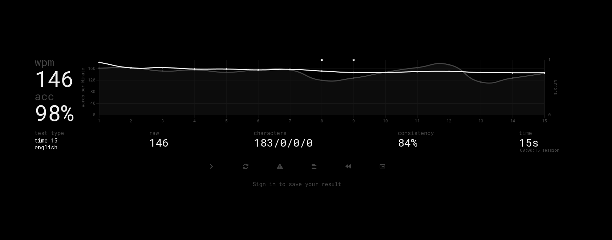

Accent Cycling
Press the leader key repeatedly to step through all variants of a character. One gesture, every accent.
é
è
ê
ë
The PowerToys Quick Accent experience, native on Linux.
Hold a key, press Space: get ä, ö, ü, ß, é, ñ instantly.
No clipboard. No root. No compromises.
Hold a key, then press Space (or your configured leader key) while the window is open to get the accent. The width of the window is exactly how long you have. Drag the handles to resize it.
Eight reasons why Schnelle Umlaute is the right choice for Linux power users.
Press the leader key repeatedly to step through all variants of a character. One gesture, every accent.
Direct insertion via commitString(). Clipboard stays yours.
One key. Any command.
Map any Unicode: if it exists, you can type it.
Native on both display protocols. No root needed.
Unlimited mappings · adjustable delay · Space, Arrow, Alt, or custom leader keys · per-app blacklist & whitelist.
Group your mappings into named profiles, one for German, one for French, one for Emoji, and switch the active set with a hotkey or cycle through your favorites. 47 ready-made language and symbol presets are included.
A live indicator shows the accent variants as you cycle, right where you need it. Wayland (wlr-layer-shell); the caret mode also works on X11.
Press and hold a o u s
Within 400ms, tap Space
ä ö ü ß, instantly
Press again: á → à → â
This is EXACTLY what I was looking for and unlike all other solutions I tried it works easy and like a charm! Thank you so much for your work!"
Your tool is getting reliable for daily use, now even with other languages than German!"
Congratulations on this excellent add-on!"

I can be happy as well to have perfectly equivalent Quick Accent on Linux thanks to you."
A native Fcitx5 addon for Linux. Type German umlauts, French accents, or any Unicode character using the same hold + space gesture as Windows PowerToys Quick Accent. System-wide, lightweight, no root needed.
Yes. Natively on both X11 and Wayland, no extra configuration. It integrates directly with Fcitx5.
Never. Unlike xdotool-based workarounds, Schnelle Umlaute uses Fcitx5's commitString() API: direct insertion, clipboard untouched.
German umlauts by default (ä ö ü ß Ä Ö Ü). With unlimited configurable mappings: French accents, Spanish, Portuguese, Braille Unicode, emojis, math symbols, full text snippets.
Supported on Arch Linux, Ubuntu/Debian, Linux Mint, Fedora, and openSUSE. Works on any distro with Fcitx5.
Yes, in the bundled editor (schnelle-umlaute-editor), the same app you use for mappings, leader keys and profiles. Default: 400ms lowercase, 700ms uppercase, adjustable from 50ms to 2000ms to match your typing speed. You can also set a minimum hold, so a quick tap stays a plain letter and only a deliberate hold opens the accent window.
Yes. Map any key to a full phrase, e.g. hold m + Space to insert your email address, g for a Vim command like ggVGy (select all + yank), or u for sudo apt update. Works with any length of text.
Space (default), Arrow keys, Alt/AltGr, or up to two custom keys of your choice. Multiple leader keys can be active at the same time. Custom leaders support dual hand-split mode for ergonomic typing.
Yes, with any layout. QWERTY, QWERTZ, AZERTY, Dvorak, Colemak and others: Schnelle Umlaute reads the character a key actually produces instead of assuming a fixed key position, so where a letter sits on the board does not matter. A custom leader is stored as the physical key that was pressed, so it survives a layout switch, and Shift does not change it. Programmable and self-built keyboards (QMK, ZMK, split, ortholinear) work as well, as long as they send standard key codes, which is the default.
Yes. The App Filter lets you set a blacklist (disable in listed apps) or a whitelist (enable only in listed apps). Useful for games, password managers, IP/number-only fields, or apps with conflicting shortcuts.
Yes. Group your mappings into named profiles (one for German, one for French, one for Emoji) and switch the active one with a hotkey or cycle through your favorites. 47 ready-made language and symbol presets (German, Français, Español, Português, Braille, Emoji, Math, IPA, and more) are included, so you rarely start from scratch.
Optionally, yes. A cycle overlay shows the accent variants as you step through them, anchored at the mouse pointer, at the text caret where you type, or a fixed grid position, with an optional timing progress bar. It uses the Wayland wlr-layer-shell protocol (KDE Plasma, sway, Hyprland, …); the caret mode also works on X11. Every other feature works without it.
Open Source · Free forever
Schnelle Umlaute will always be free and open source. If it makes your daily typing a little better, support the project on GitHub: star it, report issues, or spread the word.
Free. Open source. Two minutes to install.